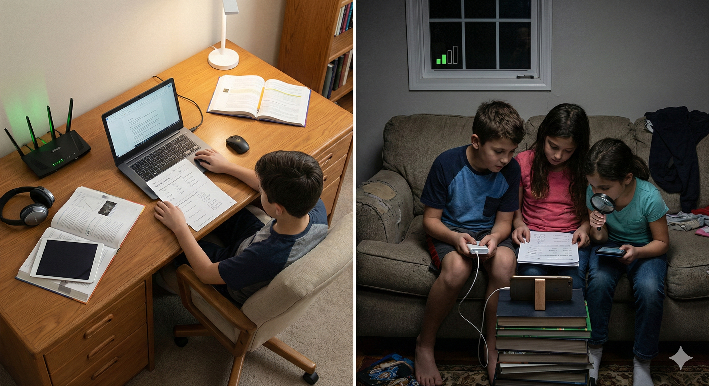
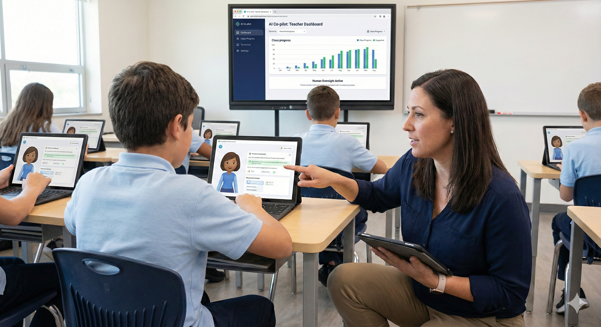
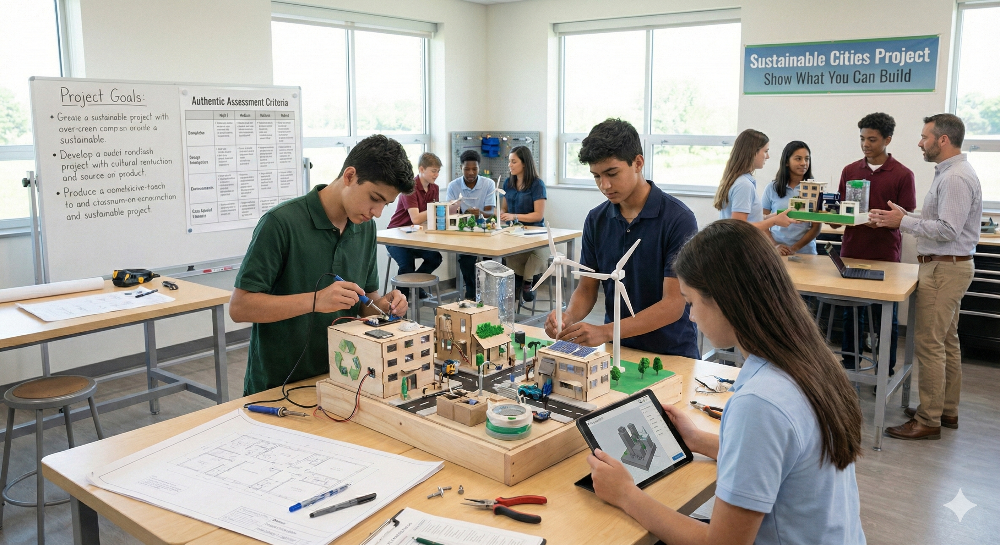
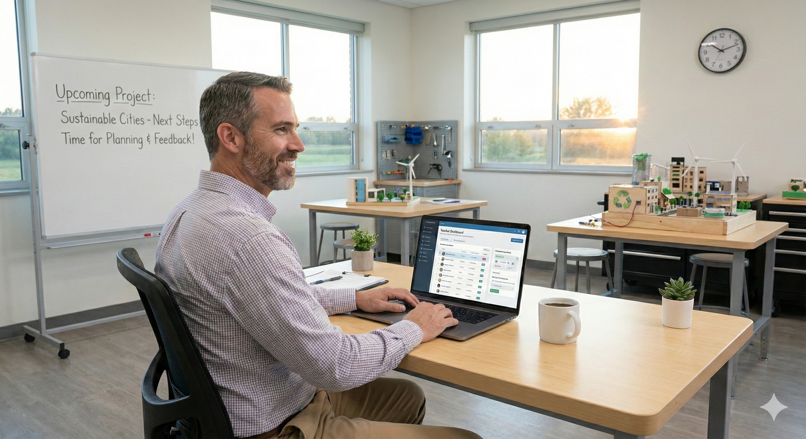
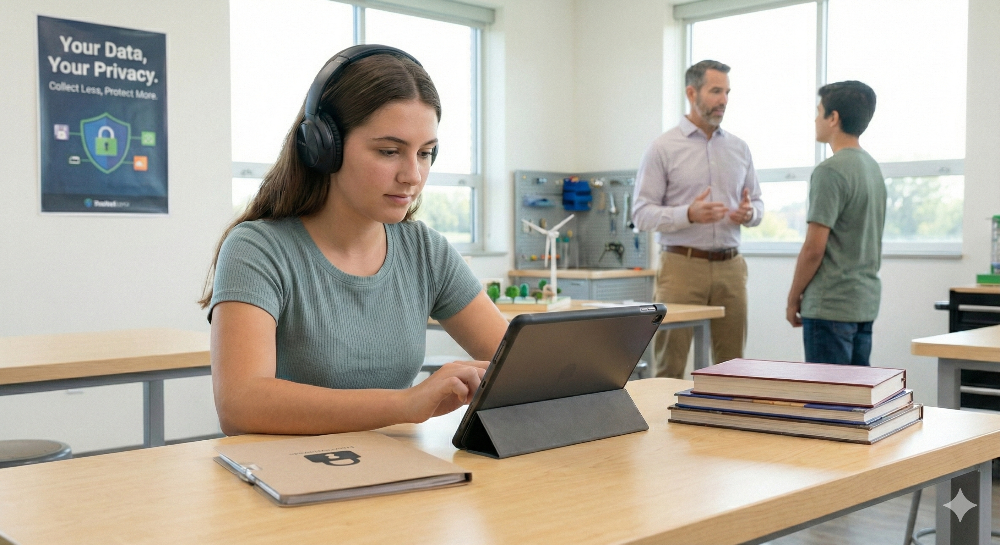

Case studies for equitable digital learning
Five narratives on access, AI tutors, assessment, teacher time, and privacy.
Each case moves from lived classroom realities to the systems that shape them. Start here to understand the stories, then dive into factors, implications, solutions, and topic connections to see how to steer AI toward quality education.

Case 1
Access Gap - Same syllabus, different starting line
Students are told to complete the same work at home, yet the reality is uneven. Some have a laptop, broadband, and a quiet desk. Others share one phone, rely on prepaid data that runs out mid lesson, and sit within two bars of mobile signal. Learners who need assistive tools often do not receive them. Teachers print packs, compress videos, and chase submissions, which slows feedback and motivation.
Global evidence shows that limited home internet and device access cuts students off from remote learning and weakens participation over time (UNICEF, 2020; UNICEF & ITU, 2020; Avanesian et al., 2021; GSMA Intelligence, 2024).

Case 2
AI Tutors - Co-pilot, not autopilot
Schools are piloting AI tutors to give every learner more practice, faster feedback, and accessible supports like captions and read-aloud. Well designed systems can raise achievement by personalising tasks and pacing, echoing decades of evidence on intelligent tutoring and adaptive feedback (Ma et al., 2014; American Psychological Association).
The risk is treating AI like an autopilot that replaces teacher judgement. Without clear goals, human oversight, and privacy safeguards, AI can hallucinate answers, encode bias, and nudge surface-level shortcuts that undermine learning. Responsible use keeps educators in the loop: AI extends the teacher, it does not replace the teacher (UNESCO, 2023; U.S. Department of Education, 2023).

Case 3
Authentic Assessment - Show what you can build
Authentic assessment asks students to apply knowledge in real contexts. Instead of picking one correct option, they design, build, investigate, present, or solve a realistic problem, then justify their choices and reflect on results. Research describes this as direct evidence of performance on worthy intellectual tasks, in contrast with indirect proxies from traditional tests (Wiggins, 1990; Open Publishing at UMass Amherst).
Reviews find that authentic tasks can reveal deeper understanding and transfer, especially when aligned to clear criteria and supported with feedback (Koh, 2017; Darling-Hammond, 2013). Many universities operationalise this through shared rubrics such as the AAC&U VALUE set to score original student work across programmes (AAC&U, n.d.).

Case 4
Teacher Time - Less paperwork, more pedagogy
Teachers want to teach, yet a big slice of the week is swallowed by admin, compliance, and logistics. Recent surveys show administrative work ranks alongside student behaviour and pay as top stressors, while long weeks stretch well beyond contract hours (RAND, 2024). International data also track rising workload and stress that pull attention away from feedback, planning, and relationships that drive learning (OECD, 2025).
The fix is not to work harder. The fix is to delete low-value tasks, automate the repetitive ones, and give teachers time back for pedagogy. Evidence suggests existing technology can reclaim a meaningful share of hours when paired with clear guardrails and human oversight (Bryant et al., 2020).

Case 5
Privacy and Minors - Collect less, protect more
Schools are turning to digital tools for lessons, homework, and analytics. That shift brings real benefits, yet it also exposes children to unnecessary data collection, profiling, and opaque algorithms. Investigations tied to the UNESCO Global Education Monitoring Report found that many edtech tools recommended during the pandemic could watch or survey children, while only a small share of countries clearly guarantee privacy in education by law (UNESCO, 2023).
The bottom line is simple: children deserve learning tools that work without strip-mining their data. The best interest of the child should guide every design and procurement choice, in line with the UN Committee on the Rights of the Child’s guidance on the digital environment (Committee on the Rights of the Child, 2021).